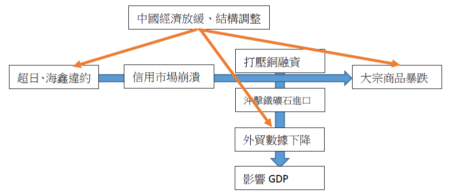

內幕交易是否應該合法化一直是學界或者業界爭論的焦點，爭論的焦點在於：
上述問題的探討又將涉及監管者存在的必要性的討論，以及監管者在市場中應該扮演的角色。
2013年12月13日，證監會正式下發《證券發行與承銷管理辦法》，與此同時中登公司與上交所、深交所聯合發佈新股申購細則，這標誌着新一輪的新股發行改革進入了實質操作階段。
新辦法有諸多積極的意義，最值得肯定的是證監會將發揮更強的監督作用而非審批作用，對於違法違規的處罰力度大幅加強，此舉確保了信息的真實性，有利於資本市場的長期健康發展。
遺憾的是這一本應以保護中小股民爲核心的制度設計，實則將利益的天平再次向機構參與者傾斜，特別是以下四個方面的問題，是否真正保護了中小股民的利益，值得商榷：
在中國資本市場仍處於轉型期，由爲國有企業轉型的歷史使命轉向爲全社會實體經濟服務的關鍵階段，特別是以中小板創業板爲代表的小微企業股權融資尚處起步階段之時，筆者認爲過早地放開價格管制實行市場化將會造成許多不良後果。
筆者懷念曾經的窗口指導制度，低廉的新股價格不僅通過逆向選擇使許多真正需要融資的企業得以上市，資本市場參與者更是獲得了高額的投資回報。通過跟蹤窗口指導和市場化定價發行之新股的股價和業績表現，不難發現一條清晰的分界線，市場化改革之前上市的公司整體質量遠高於改革之後上市的公司，不僅在上市首日更是在隨後數年的表現都遠超市場，以華蘭生物、蘇寧電器等爲代表的一大批成功、優質的企業在成功上市融資後發生了質變，不僅在開盤首日，更是在隨後數年爲投資者帶來了源源不斷的回報。
然而在新股發行價格管制放開後，隨之而來的便是讓人魂牽夢繞的新股發行“三高現象”（高股價、高市盈率、高超募倍數），很多媒體將這一現象歸罪於新股定價市場化之不完全，導致利益集團操控發行價格所致，其中一部分是對的，新股發行的超前市場化滋生了一個龐大的利益集團，養肥了投行、養肥了參與發行定價的機構、更是養肥了那些僞創業者！不過，這一解釋並沒有抓住問題的本質。是問，如果發行價格真的被人爲太高，爲什麼還有這麼多的超額申購？若完全放開市場化，讓往上申購的中小股民也完全參與到定價中來，三高現象真的能緩解嗎？筆者認爲真實原因是需求與供給短期不平衡導致。具體而言便是在當下資本市場轉型期，供給在這一特殊階段跟不上需求，所以造成了價格在長期意義上的錯誤確定。
筆者認爲政府的角色應當是進行着眼於長期均衡狀況的短期調整。例如對於新能源行業的價格補貼便是調整了短期需求跟不上供給的狀況。新股發行，特別是小板股票的發行亦是如此，未來一段時間實行適當的價格管制使市場在短期仍能達到長期均衡，待供給基本更上需求後再交給市場這一無形之手進行調節。
筆者建議：恢復行政限價手段，通過實行嚴格的窗口指導制度解決三高問題，不僅能夠讓利中小股民，同時也能讓更多真正需要資金的企業進行融資，待供給與需求逐步達到均衡時，再逐步放開價格管制。
在前些年的新股發行過程中，由供給需求不平衡導致的即使“三高”現象普遍，新股中籤率仍然低得可憐，究其原因是太多的大機構套利者分攤了新股發行的紅利。除此之外機構投資者打着成熟投資者的旗號竟還能夠享受網下配售的待遇，以獲得更高的中籤率。如今證監會再將中小投資者網上申購的份額奪走劃撥給機構投資者，這怎能說是在維護中小股民的利益呢？
證監會的原意是希望讓更多的機構投資者參與網下發行定價環節，以防少數人操控發行價格的現象發生，這一搶不幸再一次打偏，究其原因仍是將三高現象歸結與不完全的市場化，而非過早地市場化所致。如果供給需求不均衡的現象仍然存在，即使完全市場化，全員參與定價，最終依然不能解決問題。
筆者建議：大幅降低網下配售比例或者取消網下配售緩解，所有投資者在同一個平臺公平認購股份，不允許處社保基金以外的機構投資者，特別是以債券基金、貨幣式集合理財產品爲代表的套利資金參與申購，使中小股民充分享受到新股發行的紅利。
盤中成交價較當日開盤價首次上漲或下跌達到或超過10%的，臨時停牌時間爲1小時
盤中成交價較當日開盤價首次上漲或下跌達到或超過20%的，臨時停牌至14︰57
可以說，限制的嚴格程度史無前例。根據筆者的觀察和在大一暑假實習期間與諸多營業部老師們和股民朋友們的交流發現，越是嚴格的價格管制最終往往造成越是嚴重的投機炒作。例如漲跌停板、T+1等豈在抑制投機的制度反而降低了莊家坐莊的難度，加劇市場波動。（題外話：更爲嚴重的是，股指期貨、融資融券的高門坎導致了機構T+0，散戶T+1的不公平競爭局面，怎麼能說管制制度保護了中小散戶？）有興趣的朋友可以看一下002658、002659、300293-300299幾隻股票的首日走勢，當時深交所實行了首日換手率超50%就停牌的策略嚴格程度空前，最終的效果可想而知。
造成這一現象的本質依然是供給需求的不同步，於是就有媒體想當然地說，爲了增加供給是不是讓限售股第一天就解禁呢？愚蠢程度實在是讓人懶得抨擊。
筆者建議：基於監管者的監管範圍是信息流通而非市場行爲的理念，放開首日價格管制，實行T+0交易制度並且公開當日大額買賣股票的賬戶信息反而能夠緩解新股投機炒作的現象。
這一制度的本意是希望降低由新股發行導致供給增加造成的存量股票價格下跌。然而在仔細閱讀了上交所、深交所發佈的申購細則後，筆者大失所望。這一所謂的市值配售制度不過是以原來的資金申購制度爲模板穿了個馬甲罷了，不僅需要足夠市值獲得申購權，還需要對所有認購繳納全額資金，筆者根據2009年IPO重啓以來的新股發行價格和節奏測算，大約需要15%的股票市值和85%的可用資金才能比較好的利用資金，而且這是建立在發行節奏保持穩定發行價格較爲接近的基礎之上，否則還需要不斷地調整股票市值和申購資金的比例，這給中小股民在倉位計算和調整上帶來了很大的麻煩，而且極易產生高昂的手續費最終得不償失。對於機構而言申購新股則是輕而易舉，特別是對於持有一定長線倉位的基金而言，所持市值能夠保證其擁有足夠的申購額度，只需另1%的資金便能順利打滿申購上限，根本不需要動態調整倉位。因此市值配售制度再次將新倒向了機構這一邊。況且市值配售制度雖然趕出了大量貨幣式及債券型基金，卻引來了大量股票型基金的參與，最終中籤率也並不一定能夠大幅提高。
筆者認爲任何參與市場的投資者都有申購新股的權利，證監會的這一限制有失公平，而且在筆者前一篇文章中也提到，此舉並不能夠起到穩定市場的效果，反而給申購者帶來諸多不變。
筆者建議：政策重點應集中在如何將由現階段由於供給需求不均衡所帶來的「新股紅利」更多地分配給中小股民，而不是投行、機構以及僞創業者上！
新股發行改革依然路漫漫，筆者欣賞證監會此次改革的決心，但也懇請證監會在基於保護在二十年來爲國企改革、爲資本市場發展做出偉大貢獻的無數中小股民們利益爲核心的理念，能不能稍稍放緩新股發行改革，特別是市場化腳步呢？
最近兩家民營企業超日太陽和海鑫鋼鐵的違約事件備受矚目，並引發期銅急挫、鐵礦石暴跌、信用市場恐慌和人民幣貶值等一系列連鎖反應，今後甚至將打擊備受銅融資與鐵礦石進口支撐的外貿，作爲三駕馬車之一直接影響到中國GDP數據。
不過筆者認爲市場短期內的反應確有過度之嫌，本次違約事件，包括之前的房價局部崩盤、人民幣大幅貶值，理解爲政府有意放出反轉信號、扭轉市場的單邊預期更爲合適，這樣一來讓市場避險情緒集中釋放，進行壓力測試，二來給市場持單邊預期的投資者亮出黃牌，顯示出政府控制增量、管理存量、風險可控的治理思路。
所以對於一些媒體：房價一下跌就說樓市崩盤、人民幣一回調就說升值結束、債券市場一違約就扔個數字說中國千萬億違約風險等的羊羣行爲，大家還是當作茶餘飯後的冷笑話吧，更多的是理解政府的信號，對長期可能發生的反轉做好充足的準備就行。2007年530事件也是政府給投機亮的一張黃牌，媒體大報股市熊市論，結果不還從3400漲到6100了，短期跟隨市場情緒止損操作的人士上當了，但如果沒有理解政府的信號，不改變長期預期，一意孤行地認爲股市將長期上漲的話，結果可想而知。
其實從更宏觀的角度說，政府更希望的是市場能夠意識到這一系列連鎖事件的共同原因：中國經濟放緩、結構調整（紅箭頭部分），而不要太在意兩個連鎖反應（藍箭頭部分）。這表明中國政府對於改變經濟增長模式的決心。近年來政府通過釋放一系列信號，希望以此改變各界對於中國投資驅動經濟模式的單邊預期，並及早爲經濟結構調整做好準備。

附：超日、海鑫違約事件：扭轉信用市場不違約的單邊預期，治理思路：控制信用市場垃圾債的增量，管理不良資產存量，讓信貸違約風險可控；人民幣大幅貶值：扭轉人民幣升值預期，控制遊資增量，管理外匯存量，讓遊資流出風險可控；樓市下跌：扭轉房價單邊上升預期，控制房地產投資增量，管理相關信貸業務存量，讓房地產市場軟着陸。
從上面的討論可以看出，監管者所要做的，就是保證信息的透明，杜絕信息壟斷、內幕交易的產生，這是維護市場的必要的監管措施。
對於市場行爲，即信息的處理方面，監管者不應過分涉足，因爲市場上有更聰明的投資者去正確地處理它，監管者只需要維護一個正常的市場秩序-信息透明，足矣。